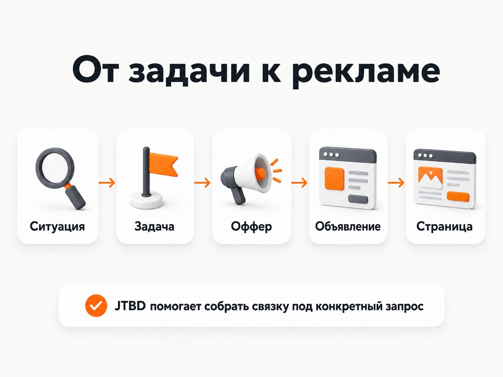

Блог о платном трафике
JTBD в маркетинге: что это и как использовать в рекламе
JTBD, или Jobs To Be Done, - подход, который помогает понять, какую задачу человек пытается решить с помощью продукта или услуги и почему он вообще начинает искать решение.
Вместо описания аудитории в духе «мужчины 30-45 лет, средний доход, живут в крупных городах» мы смотрим на ситуацию: что произошло у человека, чего он хочет добиться и какой результат считает хорошим.
В Jobs To Be Done продукт часто описывают как то, что клиент «нанимает» для выполнения определенной работы. При этом значение имеет не только функциональная задача, но и обстоятельства, эмоции и ожидаемый результат.
Для рекламы JTBD интересен прежде всего практической стороной. Он помогает разделить спрос по реальным мотивам, сделать более точные офферы, написать объявления под конкретную ситуацию и привести пользователя на страницу, которая продолжает ту же мысль.
Что такое JTBD простыми словами
Допустим, два человека ищут специалиста по Яндекс Директу.
Первый никогда раньше не запускал рекламу. У него новый бизнес, и ему нужно получить первые обращения.
У второго реклама уже работает, деньги расходуются, но стоимость заявки выросла и непонятно почему.
Формально оба относятся к одной целевой аудитории и могут вводить похожие запросы. Но задачи у них разные.
Первому нужно:
«Запустить рекламу и начать получать обращения».
Второму:
«Найти причину плохих результатов и перестать терять рекламный бюджет».
Если показать им одинаковое объявление «Настройка и ведение Яндекс Директа», оно формально подходит обоим. Но такое сообщение почти ничего не говорит о конкретной проблеме каждого человека.
JTBD предлагает сегментировать аудиторию именно по таким ситуациям и желаемому результату. Это одно из главных отличий подхода от классической сегментации только по полу, возрасту, должности или другим признакам.
Как формулируется Job To Be Done
Для маркетинга достаточно простой конструкции:
Когда [возникает ситуация], я хочу [решить задачу], чтобы [получить результат].
Например:
Когда реклама Яндекс Директа начинает приносить слишком дорогие заявки, я хочу понять, где теряются деньги, чтобы вернуть нормальную экономику рекламы.
Здесь уже есть почти все, что потребуется для рекламной коммуникации:
- ситуация - заявки стали дорогими;
- проблема - непонятно, где теряется бюджет;
- задача - найти причину;
- желаемый результат - улучшить экономику рекламы.
Эта формула близка к Job Story, где задача описывается через ситуацию, мотивацию и ожидаемый результат.
Сам продукт в формулировке может вообще не появляться. Человеку не нужен «аудит рекламной кампании» сам по себе. Ему нужно понять, почему реклама работает плохо и что с этим делать.
Зачем JTBD нужен в рекламе
Главная польза JTBD - возможность уйти от одного универсального рекламного сообщения для всей аудитории.
У одного продукта может быть несколько причин покупки.
Например, специалиста по контекстной рекламе могут искать, чтобы:
- запустить рекламу нового проекта;
- снизить стоимость заявок;
- разобраться с большим количеством нецелевых лидов;
- передать ведение кампаний другому специалисту;
- увеличить объем рекламы, которая уже окупается.
Услуга может оставаться той же, но контекст обращения отличается.
Отсюда можно получить несколько рекламных связок:
задача клиента -> оффер -> объявление -> посадочная страница.
Это особенно полезно там, где услуга сложная, спрос неоднородный и одного общего описания недостаточно.
Подробнее - Как настроить рекламу в Яндекс Директ.
Как использовать JTBD для сегментации спроса
В рекламе я бы начинал не с попытки придумать десять красивых Job Story, а с реальных данных.
Посмотрите:
- какие поисковые запросы приводят людей на сайт;
- с какими вопросами они обращаются;
- что пишут в заявках;
- что рассказывают менеджерам;
- почему решают сменить существующее решение;
- какие проблемы чаще всего встречаются в отзывах;
- какие причины отказа фиксируются в CRM.
Для Яндекс Директа особенно полезен отчет по фактическим поисковым запросам. Уже там часто видны разные ситуации.
Например:
«настроить яндекс директ»
«аудит яндекс директ»
«почему директ не дает заявки»
«ведение яндекс директ»
За этими запросами стоят разные задачи. Нет смысла автоматически объединять их в один сегмент только потому, что все они относятся к одной рекламной системе.
При этом один поисковый запрос еще не равен отдельному JTBD. Несколько разных формулировок могут описывать одну и ту же задачу клиента.
Как превратить JTBD в рекламный оффер
После определения задачи нужно понять, что именно предложить человеку.
Возьмем условный Job:
«Когда Яндекс Директ уже работает, но стоимость заявки постоянно растет, я хочу найти причину, чтобы не увеличивать рекламный бюджет вслепую».
Слабый общий оффер:
Профессиональная настройка Яндекс Директа
Он почти не связан с исходной задачей.
Более точное направление:
Разберу, где Яндекс Директ теряет бюджет и почему растет стоимость заявки
Здесь человек сразу видит свою ситуацию.
JTBD не означает, что нужно в каждом оффере буквально пересказывать всю Job Story. Наоборот, рекламное сообщение должно оставаться коротким. Метод нужен, чтобы понять, какую мысль поставить в центр.

Как использовать JTBD в объявлениях
При создании объявления можно отталкиваться от четырех элементов:
Ситуация -> проблема -> решение -> результат.
Для разных Jobs получатся разные рекламные сообщения.
Например, одна услуга по работе с Яндекс Директом.
Задача 1. Запустить рекламу
Ситуация: рекламы еще нет.
Основная мысль объявления:
Настройка Яндекс Директа с нуля
Здесь человеку важен запуск.
Задача 2. Разобраться с плохими результатами
Ситуация: реклама работает, но результат не устраивает.
Основная мысль:
Дорогие заявки из Директа? Найду, где теряется бюджет
Здесь акцент уже на диагностике.
Задача 3. Передать текущую рекламу специалисту
Ситуация: кампании существуют, но заниматься ими самостоятельно больше не хотят.
Основная мысль:
Ведение и оптимизация действующих кампаний Яндекс Директа
Продукт близкий, но причина обращения и рекламный акцент меняются.
По этой же логике JTBD можно использовать в медицине, образовании, B2B, недвижимости, интернет-магазинах и других нишах.
JTBD и посадочная страница
Ошибка возникает, когда объявление точно попадает в задачу клиента, а после клика человек попадает на универсальную страницу обо всем сразу.
Допустим, объявление обещает разобраться, почему реклама не приносит заявки.
На странице логично продолжить именно эту тему:
1. Какие проблемы могут приводить к отсутствию заявок.
2. Что будет проверено.
3. Какие данные понадобятся.
4. Что получит клиент после анализа.
5. Примеры похожих задач или кейсов.
Если вместо этого первый экран сообщает только «Настройка, аудит и ведение рекламы для любого бизнеса», связь между запросом, объявлением и страницей становится слабее.
Конверсия сайта зависит от множества факторов, но соответствие трафика, рекламного сообщения, оффера и посадочной страницы входит в число базовых элементов рекламной связки.
Подробнее - Конверсия в Яндекс Директ.
Один продукт может конкурировать с совершенно разными решениями
JTBD помогает шире смотреть и на конкурентов.
Если человек хочет «быстро получить поток заявок для нового бизнеса», он может выбирать не только между двумя специалистами по Яндекс Директу.
Он может рассматривать:
- Яндекс Директ;
- размещение на классифайдах;
- продвижение в социальных сетях;
- самостоятельный поиск клиентов;
- работу с уже существующей базой.
С точки зрения продукта это разные категории. С точки зрения задачи клиента они могут конкурировать между собой.
Именно поэтому анализ только прямых конкурентов иногда дает неполную картину. В JTBD выбор рассматривается через прогресс, которого человек пытается добиться в определенных обстоятельствах.
Как собрать JTBD для рекламной кампании
Для практической работы с рекламой достаточно пяти шагов.
- Собрать реальные ситуации клиентов.
Использовать поисковые запросы, заявки, звонки, CRM, отзывы и разговоры с клиентами.
- Определить повторяющиеся задачи.
Искать причины обращения, а не просто одинаковые характеристики людей.
- Сформулировать Jobs.
«Когда происходит X, хочу Y, чтобы получить Z».
- Собрать под них рекламные связки.
Для каждой значимой задачи определить запросы и аудитории, оффер, рекламное сообщение и подходящую страницу.
- Проверить результат на данных.
После запуска сравнивать CTR, конверсию, стоимость обращения, качество лидов и продажи.
JTBD здесь не заменяет аналитику. Он дает гипотезу о том, почему человек должен откликнуться на предложение. Дальше эту гипотезу нужно проверять рекламой.
Подробнее - CPA в Яндекс Директе.
Какие ошибки чаще всего возникают при использовании JTBD
Первая ошибка - придумать задачи клиентов внутри компании и считать их доказанным фактом.
Если никто не разговаривал с клиентами, не смотрел реальные запросы и не анализировал причины покупки, легко написать убедительную Job Story, которой в реальности почти не существует.
Вторая ошибка - путать задачу и характеристику продукта.
«Хочу рекламу с настроенной Метрикой» - слабая формулировка Job. Настроенная аналитика является способом решения. Причина может звучать иначе: «Хочу понимать, какие рекламные расходы действительно приводят к продажам».
Третья ошибка - сделать много сегментов без достаточного объема спроса.
Не каждому Job нужна отдельная кампания, группа объявлений и посадочная страница. Если данных мало, чрезмерное дробление только усложнит рекламу.
Четвертая ошибка - изменить только объявление.
Если Job действительно отличается, иногда необходимо менять и предложение, и содержание страницы. Человек должен увидеть продолжение своей задачи после клика.
Нужно ли отказываться от обычной целевой аудитории
Нет.
JTBD не отменяет географию, платежеспособность, профессию, возраст и другие характеристики, если они влияют на покупку или настройки рекламы.
Например, стоматологической клинике по-прежнему важно показывать рекламу людям из нужного региона. B2B-компании важно понимать, кто принимает решение и какие компании подходят ей по масштабу.
Просто описания «мужчина, 35 лет, предприниматель» недостаточно, чтобы понять, какое рекламное сообщение ему показать.
JTBD добавляет следующий уровень: почему именно сейчас этот человек ищет решение и какого результата хочет добиться.
JTBD в маркетинге - это инструмент для более точной рекламы
Если свести метод к рекламной практике, логика получается простой:
Ситуация клиента -> задача -> желаемый результат -> оффер -> объявление -> посадочная страница.
Вместо одного сообщения для всей целевой аудитории можно выделить несколько реальных причин покупки и проверить отдельные рекламные связки.
При этом глубоко погружаться в продуктовую методологию для такой работы необязательно. Для начала достаточно понять, в каких ситуациях люди обращаются, какую проблему хотят решить и почему выбирают конкретный вариант.
А эффективность уже нужно проверять по фактическим результатам: заявкам, их качеству, стоимости привлечения и продажам.
Подробнее - главная страница с услугами и кейсами.